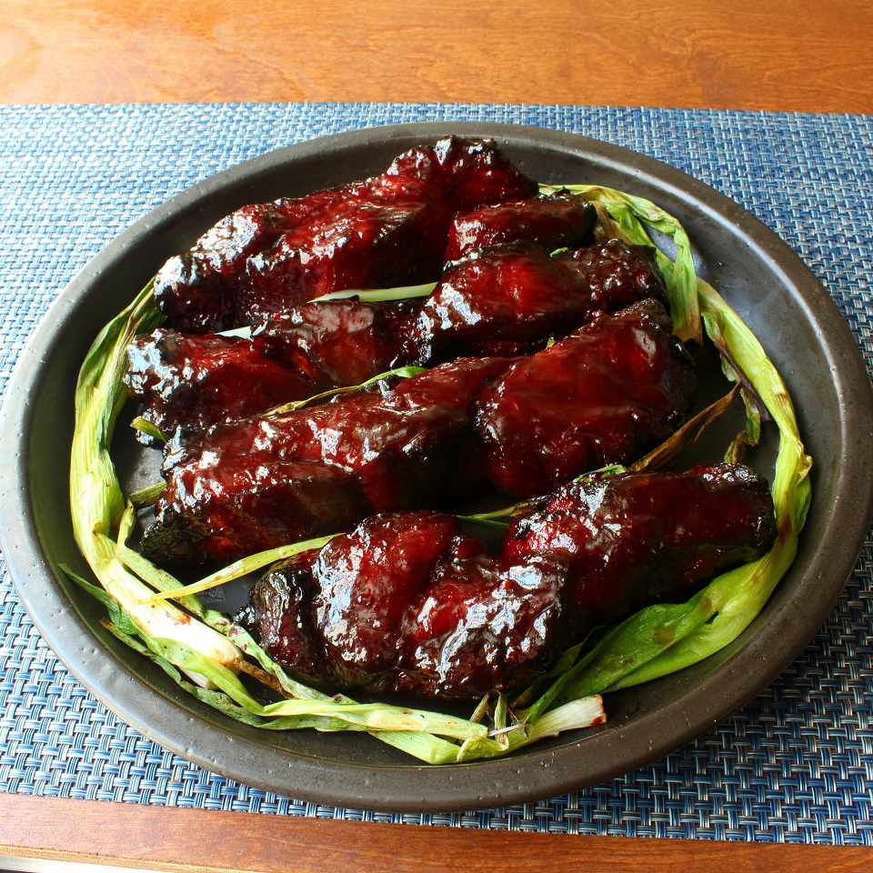

Char Siu Pork

Description
This Chinese barbeque pork is glossy, deliciously savory, and quite easy to make at home — even without a fancy ceramic grill.
Ingredients
Serves 6
- 2/3 cup soy sauce
- 1/2 cup honey
- 1/2 cup Chinese rice wine
- 1/3 cup hoisin sauce
- 1/3 cup ketchup
- 1.3 cup brown sugar
- 4 cloves garlic, crushed
- 1 teaspoon Chinese five-spice powder
- 1/2 teaspoon freshly ground black pepper
- 1/4 teaspoon cayenne pepper
- 1/8 teaspoon pink curing salt
- 3 pounds boneless pork shoulder
- 1 teaspoon kosher salt
Directions
- Place soy sauce, honey, rice wine, hoisin sauce, ketchup, brown sugar, garlic, five-spice powder, black pepper, cayenne pepper, and curing salt in a saucepan. Bring to a boil on high heat; reduce heat to medium-high. Cook for 1 minute. Remove from heat. Cool to room temperature.
- Cut pork in half lengthwise. Cut each half again lengthwise forming 4 long, thick pieces of pork.
- Transfer cooled sauce to a large mixing bowl. Stir in red food coloring. Place pork sections into sauce and coat each piece. Cover with plastic wrap and refrigerate 4 to 12 hours.
- Preheat grill for medium heat, 275 to 300 degrees F (135 to 150 degrees C) and lightly oil the grate. Line a baking sheet with parchment paper.
- Remove sections of pork from marinade and let excess drip off. Place on prepared baking sheet. Sprinkle with kosher salt to taste.
- Transfer pork sections to grate over indirect heat on the prepared grill. Cover and cook for about 45 minutes. Brush with marinade; turn. Continue cooking until an instant-read thermometer inserted into the center reads at least 145 degrees F (63 degrees C), about 1 hour and 15 minutes more. Do not use any more marinade on cooked meat until after you boil it.
- Place leftover marinade in a saucepan; bring to a boil; let simmer for 1 minute. Remove from heat. Now you can use it to brush over the cooked pork.
Home